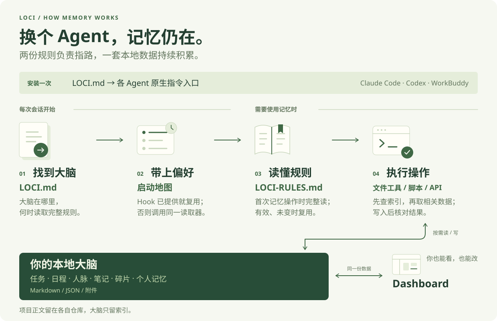
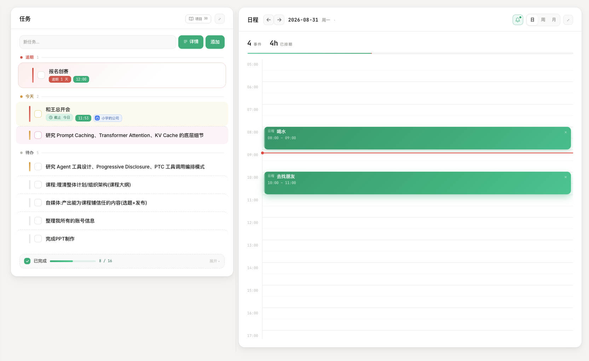
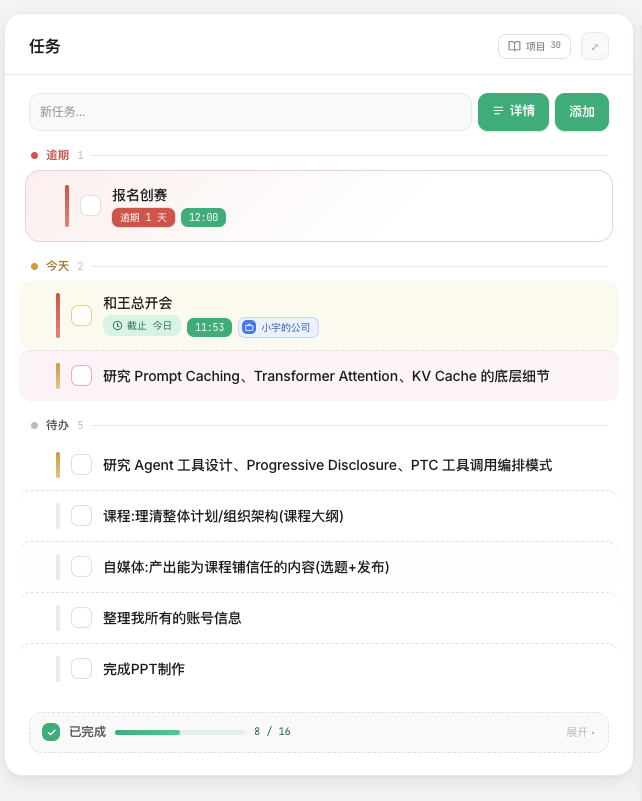
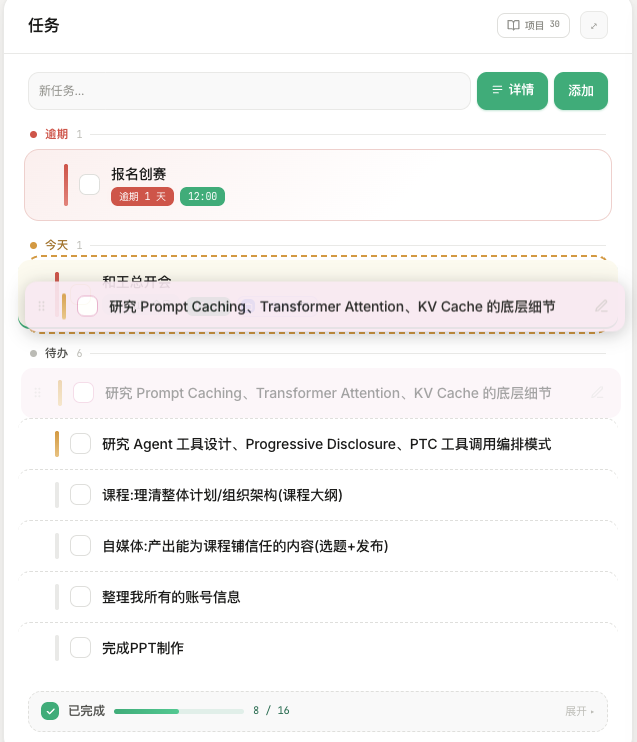
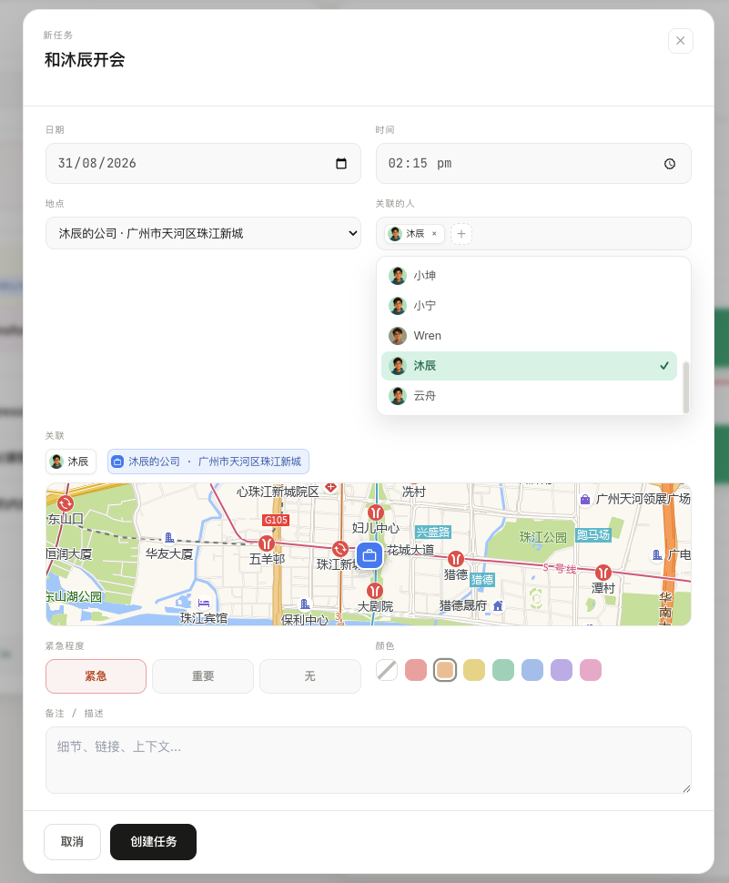
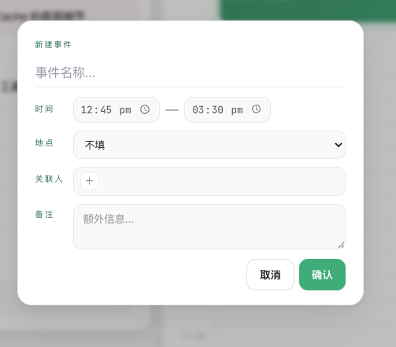
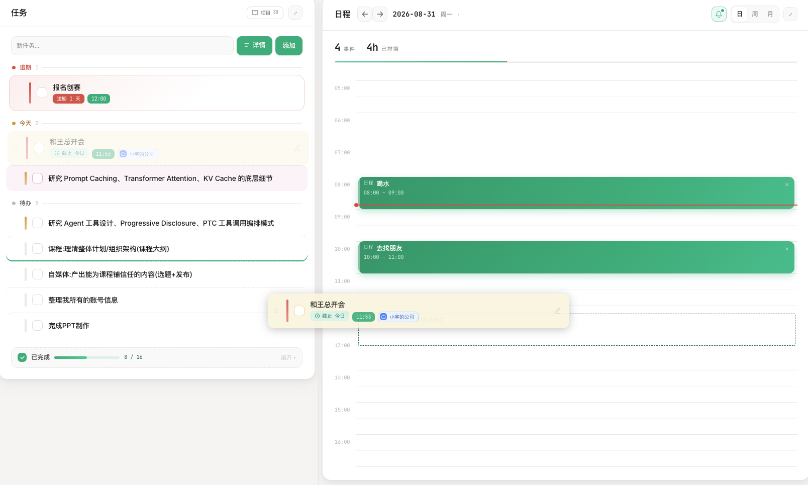
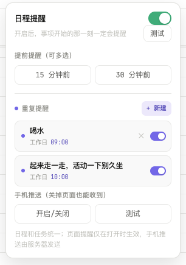

在 Claude Code、Codex、WorkBuddy 等能操作本地文件的 Agent 中发送：
帮我安装 Loci，并连接到你当前使用的客户端。 请读取并执行：https://raw.githubusercontent.com/codesstar/loci/main/docs/AI-INSTALL.md 已有大脑就复用，保留全部数据，安装后验证连接。
让偏好、安排、人物和灵感有一个共同的归处。
Loci 把它们保存在本地，你和 AI 都能看、都能改。
复制后发给 AI，查找、安装与配置交给它。
在 Claude Code、Codex、WorkBuddy 等能操作本地文件的 Agent 中发送：
帮我安装 Loci，并连接到你当前使用的客户端。 请读取并执行：https://raw.githubusercontent.com/codesstar/loci/main/docs/AI-INSTALL.md 已有大脑就复用，保留全部数据，安装后验证连接。
已经有 Loci？直接把这段话发给新装的千问、豆包或其他 Agent：
我已经安装了 Loci，请把你连接到现有大脑。 请读取并执行：https://raw.githubusercontent.com/codesstar/loci/main/docs/AI-CONNECT.md 请你自己找到已有大脑并完成接入，保留数据，不要重复安装。
接入需要客户端支持本地文件与工具。已有大脑由 AI 自动查找，保留原数据，不用你找路径。
从日常用法，到背后的设计
打开你正在使用的 Claude Code、Codex、WorkBuddy，或具备本地文件与工具能力的 Agent，直接发送：
帮我安装 Loci，并连接到你当前使用的客户端。
请读取并执行：https://raw.githubusercontent.com/codesstar/loci/main/docs/AI-INSTALL.md
已有大脑就复用，保留全部数据，安装后验证连接。AI 会检查环境、找到合适的安装位置、下载程序、连接当前客户端并验证结果。需要安装依赖或授予文件权限时，跟随客户端提示即可。
直接在新工具里发送下面这段话。不用找路径、不用回旧工具问，也不用重新下载大脑。
我已经安装了 Loci，请把你连接到现有大脑。
请读取并执行：https://raw.githubusercontent.com/codesstar/loci/main/docs/AI-CONNECT.md
请你自己找到已有大脑并完成接入，保留数据，不要重复安装。它会查找已有安装记录，识别当前客户端，备份并配置接入口，再读取已有内容进行验证。一个大脑可以连接多个 Agent；新增工具不会自动复制全部聊天记录。
Claude Code、Codex、WorkBuddy 有现成适配器。千问、豆包等客户端由 AI 核实其版本的入口与工具能力；仅能云端聊天或上传附件的版本，无法凭提示词访问本机文件。遇到能力限制，AI 应明确说明，而不是假称接通。
新开一个对话，发送：
看看我在 Loci 里的待办。已有用户应能看到同一份记录；新用户看到空列表也正常。接下来可以说“明天上午9点提醒我发材料”，再在 Dashboard 或另一个已连接的 Agent 里核对这条任务。
帮我打开 Loci Dashboard，使用我现有的大脑。
如果服务还没运行，请启动并打开页面。Dashboard 是在本机运行的面板，服务运行时才能访问。这里可以直接查看和修改 AI 保存的数据。提醒还需要调度服务、设备通知权限与实际送达。
帮我按官方指南升级现有 Loci：
https://raw.githubusercontent.com/codesstar/loci/main/docs/AI-INSTALL.md
先备份，保留我的数据和自定义规则，升级后验证并说明结果。升级与“连接新工具”是两件事。升级会更新程序和托管规则；连接新工具通常只增加入口。换电脑时也要先迁移或恢复数据，再连接新电脑上的 Agent。
Loci 是跨 Agent 的本地记忆与数据层。 它把偏好、任务、日程、人物、资料和项目上下文放在用户能查看、修改、备份的文件里，让接入同一大脑的 Agent 使用同一份已保存的信息。
最直观的例子是：在一个 Agent 里说“以后用中文简短回复”，它将偏好写入大脑。另一个正确接入的 Agent 启动时读到同一偏好，就有条件继续按这个习惯回应。这里共享的是文件里的状态，不是两个工具的全部聊天记录。
Loci 关注三件事：重要内容有没有记住不确定、不同工具之间记忆不通、用户难以统一看清与控制。它提供一个由用户掌握的共同数据层，让已有信息可以在不同工具之间接续。
| 对比 | 没有接入 Loci | 正确接入 Loci 后 |
|---|---|---|
| 记忆放在哪里 | 取决于各工具自身机制，也可能只是当前上下文 | 约定在共同大脑及项目仓库中持久保存 |
| 换 Agent | 新工具未必能拿到上一个工具的已知信息 | 可以按规则读取共同文件中已经沉淀的信息 |
| 用户能否检查 | 取决于宿主提供的入口 | 能直接读文件，也能在 Dashboard 看和改 |
| 读写规则 | 各工具自行决定或用户分别配置 | 使用统一短入口与完整操作手册 |
| 是否保证永不忘记 | 不保证 | 仍不保证；需要内容已保存、可访问且实际被读取 |
Loci 不会修改模型权重，也没有给模型增加一种生物式记忆。它增加的是模型外部的持久状态、访问约定和操作工具。模型真正受某条记录影响，发生在这条记录被放进当前上下文之后。
为什么还做 Dashboard？因为记忆如果只会保存，用户仍很难判断它有没有用、有没有记错。任务、日历、人脉和知识库把已保存的信息放回日常工作里：看安排、找资料、回忆关系、接续项目。Dashboard 也是人工纠错和检查 AI 操作的窗口。
直接查看：LOCI.md 原文与解释 · 启动地图实际输出 · 完整规则11个分块

| 层次 | 文件或模块 | 负责什么 | 不负责什么 |
|---|---|---|---|
| 短入口 | LOCI.md |
大脑在哪、怎么拿短偏好、什么时候读手册 | 不塞入各模块全部操作细节 |
| 完整操作手册 | LOCI-RULES.md |
记录判断、内容路由、工具使用、关联、日志、撤销 | 不存用户实际任务和人物正文 |
| 启动读取器 | scripts/loci-context.js |
从当前大脑读取短偏好，返回位置和指针 | 不另维护一份静态启动地图，不负责自动总结对话 |
| 执行工具 | scripts/、Dashboard API |
校验参数、读写文件、维护部分关联与活动记录 | 不自动知道用户真正想表达什么 |
| 本地数据 | Markdown、JSON、附件 | 保存跨会话状态 | 不会因为落盘就自动进入所有模型上下文 |
| 人的界面 | Dashboard | 浏览、手动操作、检查数据 | 不需要另一套与 Agent 分离的数据副本 |
| 面向人的说明 | docs/ |
安装、使用、架构、验证说明 | 不是运行时隐含的第三份业务规则 |
安装时，LOCI.md 的内容会被替换为实际大脑路径，再合并进宿主指令文件的 Loci 标记区。以后产品规则主要维护入口和手册；改脚本行为才需要改执行代码。
这里解释当前架构中模型会看到的三类内容。需要维护的是两份规则文件；启动地图是程序现场生成的一段文本，不是第三份规则文件。 用户的偏好和实际记录则保存在大脑数据中。
| 内容 | 它回答什么问题 | 内容来自哪里 | 何时读到 |
|---|---|---|---|
LOCI.md 短入口 |
大脑在哪里？先做什么？何时查手册？ | 产品维护的短规则，安装时替换路径后写入宿主入口 | 宿主加载原生指令时 |
| 启动地图 | 此刻路径、时间、用户短偏好是什么？ | loci-context.js 读取实际偏好，结合运行时路径生成 |
有效 Hook 注入，或 Agent 按入口调用同一脚本 |
LOCI-RULES.md 完整手册 |
这类内容应该怎么读、怎么保存、怎么确认？ | 产品维护的一份业务规则文件 | 首次涉及 Loci 操作时完整读取；有效且未变时复用 |
下面是当前短入口原文。<brain-path> 是模板占位符，安装或连接时替换成用户实际的大脑绝对路径，不要求用户自己猜目录。
<!-- loci:start v2 -->
## Loci 共享大脑
- 大脑根目录：`<brain-path>`。完整操作手册：`<brain-path>/LOCI-RULES.md`。
- 首次回复前获取短偏好：已有有效的 `[Loci] Lightweight startup map` 就复用；否则调用 `<brain-path>/scripts/loci-context.js`，以大脑绝对路径作为参数（Node.js 执行，路径与用户文本安全传参）。失败时仅读取 `<brain-path>/me/preferences.md` 一次。偏好立即用于当前回复。
- **首次涉及记忆、任务、日程、人物、碎片、笔记、项目记录或回顾时，先完整读取操作手册，再读写相关数据。** 普通对话中发现值得保存的明确任务、决定、稳定偏好或资料，也触发这一步；不必等用户说“记住”。无相关信号不读手册、不保存。
- 手册已完整存在于当前上下文且未变时复用；读取被截断就补齐。规则更新或上下文压缩后缺失时重新读取。同一会话不逐条消息重读。
- 启动不加载任务、计划、人物、笔记、日记和项目正文。相关时查索引，再读最小数据；要求最新信息时刷新对应来源。
- 手册相对路径以大脑根目录解析；索引或工具返回的绝对路径原样使用。项目数据属于对应项目仓库。
- 明确不保存的内容不保存；敏感、含糊或重大个人变化先确认。规则或大脑无法访问时暂停依赖它们的写入，说明限制；不能假称已读取或保存。
<!-- loci:end -->逐条看，这段入口做了七件事：
所以 LOCI.md 不是各模块完整使用说明。它先让 Agent 找到正确入口，再明确何时必须去看详细规则。
以下由当前 loci-context.js 在临时目录中真实运行生成，偏好为虚构示例，输出路径替换为 /example/loci 与 /example/work。没有读取任何人的真实资料；不要把示例路径用于实际连接。
[Loci] Lightweight startup map · 2026-10-08 09:00 Thu
Brain: /example/loci
Workspace: /example/work
This startup map is already loaded. Do not run it again in this session.
===== Standing user preferences — honor in every reply =====
# 沟通偏好
- 默认用中文，先给结论。
- 称呼我为小林。
Loci entry: /example/loci/LOCI.md
Operation manual (first Loci use): /example/loci/LOCI-RULES.md
Do not preload plans, tasks, inbox, journals, project memory, or history. Read the smallest relevant source on demand and cache it for this session.
===== end of lightweight startup map =====| 输出字段 | 意思与目的 |
|---|---|
[Loci] Lightweight startup map 与时间 |
标识这是读取器的启动输出；时间是生成时的本地时间，不会在对话过程中自行刷新 |
Brain |
本次连接的大脑位置，后续从这里定位规则和数据 |
Workspace |
当前工作目录，提供运行环境位置；不代表项目正文已读入，也不代表这个目录自动成为大脑 |
already loaded |
提醒 Agent 本会话不要又跑一遍读取器，避免 Hook 和后备调用重复 |
Standing user preferences |
来自 me/preferences.md 的短偏好；示例中的语言和称呼是动态用户数据 |
Loci entry |
短入口文件的指针，不是在地图里再复制入口全文 |
Operation manual |
完整手册的指针，不代表此时已读过手册正文 |
| 结尾的按需读取提示 | 限定启动范围，防止拿到路径后继续预加载全部任务和历史 |
偏好文件仍是模板或为空时，不输出偏好区块。当前偏好输出最多30行、2,000字节；地图总预算4,400字节，超限有提示。它是短偏好的摘取，不是语义总结，也不是全量用户画像。
Hook 和没有 Hook 的区别在递送方式。 前者由宿主在事件触发时把脚本输出放入上下文；后者由 Agent 依照入口执行同一脚本，输出作为工具结果进入上下文。两者读取同一份文件，无需同步两份偏好。
地图结尾与入口都有“不要预加载/重复读取”的短提醒，用来约束这段输出的使用范围；任务分类、人物关系等业务细节不在地图里另写一份。修改长期业务规则主要去手册，修改用户偏好去 me/preferences.md。
手册当前是规则版本6，按以下11块维护。表格是面向人的讲解；Agent 真正操作时读取大脑中的 完整手册原文。
| 分块 | 具体规则 | 解决的典型问题 |
|---|---|---|
| 01 读取与路径 | 相对/绝对路径、先索引后正文、缓存刷新、日期时区、引用内容作为资料处理 | 防止拼错路径、拿旧记录回答“最新”、将外部文字误当指令 |
| 02 保存判断 | 明确持久信号才保存；提炼事实、查重、保留来源；敏感或含糊信息先确认 | 防止什么都记、重复新增、把随口想法写成已定决定 |
| 03 任务与日程 | 完成事项与占用时间分开；通过任务工具/API 写入；更新按 ID；碎片/人物/地点保留引用 | “9点发材料”不会自动变成日历时间块；保存不等于提醒送达 |
| 04 碎片、链接与收藏 | 使用同一个碎片工具；用户说明放标注；复用标签；不再向旧 inbox 追加 | 防止收藏散在不同入口、模型猜测冒充用户标注 |
| 05 笔记与研究 | 外部正文留原处、脑中留指针；短笔记、个人研究、项目研究各有位置 | 防止把整篇研究当成碎片或决定，避免强行复制用户笔记库 |
| 06 人物、关系、互动与地点 | 按真实 name 查重；双方人物存在后再连边；互动追加、更新保留原字段 | 防止只写“是朋友”却没有图谱边，或更新时抹掉旧互动 |
| 07 个人记忆与决定 | 偏好、身份、价值观、状态、反思、经验分开；重要变化记录旧值、新值与理由 | 防止一次情绪被固化为长期价值观，兼顾当前状态与变化记录 |
| 08 项目记忆与开发待办 | 项目状态、资料、进展、决定、待办与研究留在项目仓库；大脑只留索引 | 防止项目全文挤进个人大脑、开发 todo 混入个人任务池 |
| 09 日记、回顾、整理与时间关怀 | 按相关时间窗口回顾；整理只按请求或实际启用触发器；关怀服从配置 | 防止启动全库扫描、无依据生成洞见，或反复催促用户 |
| 10 保存结果、活动记录与撤销 | 按实际结果确认；活动日志记一次；撤销先核对后续改动 | 防止失败也说成功、重复记账、撤销覆盖别人后来的修改 |
| 11 工具与扩展 | 使用现有工具与 API；参数查帮助/实现；扩展优先复用模板；文件修改核对新状态 | 防止编造命令参数、把未运行的服务当作可用能力 |
例如用户说“把这篇链接保存下来，标注下周写稿参考”：入口触发读手册；手册告诉 Agent 使用碎片工具、把用户原话放进标注、查重并核对结果；链接的实际内容、标签和记录 ID 在数据和工具结果里，不预写在规则中。
| 想改变什么 | 应改哪里 |
|---|---|
| “以后叫我小林，用中文短答” | 个人数据 me/preferences.md；下次读取器自然读到新值 |
| “什么场景需要先读手册” | 产品入口 LOCI.md；之后通过安装/刷新传播到各宿主入口 |
| “碎片、人物、任务应该怎样操作” | LOCI-RULES.md 对应分块；需要代码支持时同步改工具 |
| “新增或更新一条真实任务” | 由工具修改任务数据，不修改这两份规则 |
| “启动地图要增加一个动态字段” | 读取器代码；先评估是否值得让每个会话承担读取成本 |
普通问题通常只需要入口与短偏好；首次记忆操作再加完整手册；处理具体对象时再读相关数据。文件被读取，只说明内容进入上下文；执行是否正确，仍要看工具和文件的实际结果。
源码依据：短入口、启动读取器、完整规则。本文示例是说明快照，运行时始终以这些源文件为准。
以“明天上午9点提醒我发材料”为例：
loci-context.js。两种方式读取同一份偏好文件。LOCI-RULES.md。loci-task.js add 或对应本地 API。工具返回实际保存的记录，相关路径维护生成视图及日志。| 内容 | 由谁提供 | 时机 | 是否每条消息重复 |
|---|---|---|---|
| 短入口规则 | 宿主读取原生指令文件 | 会话建立及宿主定义的加载时机 | 由宿主管理，不让 Agent 每条消息重复读取 |
| 时间、短偏好、大脑和手册指针 | Hook 或 Agent 调用同一读取器 | 会话启动；已有有效输出则复用 | 不重复启动读取 |
| 完整操作手册 | Agent 文件读取工具 | 首次涉及 Loci 读写，或发现明确可保存信号时 | 已完整读取且有效时复用 |
| 任务、人脉、笔记、项目等实际数据 | Agent 文件或命令工具 | 当前问题需要时 | 只刷新最小相关来源 |
| 工具执行结果 | 脚本/API 返回 | 每次实际操作之后 | 本次结果用于本次确认 |
| 活动账本 | 按需读取 | 用户询问做过什么、需要回顾时 | 不在启动时全量加载 |
“注入”只是把文本放进模型当前上下文的不同途径：原生指令、Hook 附加上下文、工具读取结果都能做到。它们并不会把规则固化进模型内部。
Hook 是一个宿主事件触发的程序入口。它能让偏好在启动时更直接地被提供；没有 Hook 时，短入口要求 Agent 调用相同读取器。两条路线同源，只有送达方式不同。
短入口也不是强制执行器：宿主可能没加载它，模型可能忽略它，工具也可能没有权限。因此验收要覆盖“配置写对 → 新会话实际收到 → 真实操作正确”三个层次。Hook 主要加强第二层，不能代替第三层。
brain/
├── LOCI.md 短入口
├── LOCI-RULES.md 完整操作手册
├── me/ 偏好、身份、价值观、反思等
├── tasks/ tasks.json / calendar.json / recurring.json
├── people/ 人物档案与关系边
├── places/ 地点记录
├── notes/ 笔记、外部笔记指针和挂载配置
├── references/ 碎片与收藏附件
├── projects/index.md 认真投入项目的索引
├── decisions/ 个人决定
├── .loci/activity/ 活动账本
├── .loci/dashboard/ 本地面板及 API
└── scripts/ 受约束的操作工具
project-repo/.loci/
├── memory.md 当前状态、Now / Next
├── profile.md 稳定项目资料
├── progress/ 进展流水
├── decisions/ 项目决定
├── todo.json 项目开发待办
└── knowledge/ 项目研究、方案和资料依据：短入口、完整手册、启动读取器、Dashboard 共享入口。
规则集中在 LOCI-RULES.md 的11个分块中：读取与路径、保存判断、任务与日程、碎片、笔记、人物与地点、个人记忆、项目、回顾、保存后处理、工具与扩展。
| 用户表达 | 处理方向 | 主要保存位置 |
|---|---|---|
| “以后用中文，回复短一点” | 明确稳定偏好，当次回复就应用 | me/preferences.md |
| “明天9点发材料” | 带时间的任务 | tasks/tasks.json |
| “明天15点开会，45分钟” | 占用时间的日程 | tasks/calendar.json |
| “这个链接留着，之后写稿参考” | 碎片，用户理由作为标注 | references/ |
| “写一篇关于这次调研的完整笔记” | 长篇笔记或项目研究 | notes/ 或项目 .loci/knowledge/ |
| “小林是小周介绍认识的” | 人物记录加关系边 | people/ 与 .connections.json |
| “这个项目决定先用文件存储” | 项目内部技术决定 | 项目 .loci/decisions/ |
| 一般闲聊，没有持久信号 | 不保存 | 无 |
| 敏感、含糊、临时情绪、重大个人方向 | 先确认，不擅自固化 | 确认后按内容路由 |
统一原则是先服务当前请求，再判断是否有持久价值。保存时提炼必要事实，不保存整段聊天；明确说“不记”就不记。撤销尽量恢复本会话最近一次保存，涉及多文件或期间已有修改时不能盲目回滚。
旧版 auto/manual 分支已经移除。留下的是同一套判断：明确持久信号可自然沉淀，敏感与不确定内容先确认。删除模式选项不等于无条件保存一切。
规则告诉 Agent 怎么操作，数据告诉它这一次要操作什么。一本相对稳定的规则手册读一次后复用；日记、联系人正文、项目历史则会不断增长，不能每次启动都装进去。
当前规则中，短入口约 1.5 KB，完整手册约 14.9 KB、162行；这些是 UTF-8 文件大小与行数，不是 token 数。不同模型的切词、宿主注入及工具截断策略不同，不能只凭字节数保证“绝不会截断”或“没有污染”。
启动读取器另有 4,400字节输出预算；偏好部分有30行、2,000字节限制。超限会提示按需读取剩余偏好。这是短偏好输出的预算，不是完整手册的预算。
需要手册时必须完整读取；工具输出被截断要补齐。上下文压缩后规则丢失、手册版本变化时重新读取。“本会话读过”不意味着后续永远有效。
“索引常在、内容按需”在当前架构中的准确含义是：入口、路径和读取方法保持可发现，相关时再查模块索引和正文。 它不等于启动时常驻所有项目、笔记、联系人索引；当前入口明确不预加载这些数据。
| 决策 | 得到什么 | 付出什么、还需注意什么 |
|---|---|---|
| 本地 Markdown、JSON 和附件 | 可查看、可改、可迁移，安装不需要独立数据库 | 跨设备同步、并发冲突和复杂检索需要额外处理 |
| 跨 Agent 共用文件 | 数据不绑定单个客户端，复用已有工具生态 | 无法完全控制外部 Agent 的加载、推理和权限流程 |
| 短入口 + 一本完整手册 | 规则集中，安装块短，维护边界易解释 | 第一次 Loci 操作会多一次完整读取 |
| 首次使用才读手册 | 普通无记忆请求不承担全部规则开销 | 依赖模型识别触发场景，存在漏读风险 |
| 一次读完整手册，不拆六份指南 | 避免路由选择和多文件漂移，便于维护 | 简单任务也会读到其他模块规则，需要控制手册规模 |
| Hook 可选、读取同源 | 有 Hook 时增强偏好送达，无 Hook 仍能接入 | 后备调用仍依赖模型；不能夸大为等价的执行保证 |
| 任务与日程分开 | 完成事项与时间占用各有意义，日历不被待办挤满 | 必须做好自然语言分类和主动拖入日程的关联 |
| 碎片统一写入 | 文本、链接、图片、文件共用收集入口 | 类型增多后，抓取失败、富化状态和搜索需一致处理 |
| AI 建议与用户标注分开 | 不把推测写成用户原话，便于追溯和纠错 | 元数据更多，需要解释“建议标签”与已采纳标签 |
| 项目正文跟仓库走 | 项目边界清楚，大脑轻量，恢复工作更直接 | 索引路径可能失效，需要检查仓库位置和权限 |
| 笔记聚合，正文可留原处 | 复用用户现有 Obsidian 或文件夹工作流 | 路径、移动、访问权限以及外部链接失效要处理 |
| 暂不做 MCP、数据库和新模式框架 | 保持本地工具链简单，降低部署与维护成本 | 标准化工具发现、结构化调用与权限控制仍有提升空间 |
旧版每层都有合理的初衷：全局块负责跨项目发现大脑，启动地图把关键偏好主动送到模型，详细 CLAUDE.md 与 docs/behavior.md 负责业务规则。问题发生在职责漂移后：几个地方都开始写“记什么、往哪里写、什么时候读”，再加上聊天引擎的提示词，形成重复甚至矛盾。
当前架构让每层各司其职：入口定位；读取器提供当前短偏好；手册维护业务规则；工具执行；数据落盘。docs/behavior.md 的有效规则被迁移，旧重复文档退役；docs/ 回到面向人的说明。
把详细规则全塞进全局 MD，能减少一次手册读取，但所有普通请求都会带着它，升级也要复制更多内容到各入口。把规则拆成很多按需小指南，单次内容更少，却增加选路和维护成本。当前两份文件的选择，是在有限维护时间、跨客户端接入、首次延迟与规则一致性之间取一个明确边界。
MCP 可以提供工具发现和结构化调用，但不会自动解决“该记什么、何时检索、是否得到用户授权”。它可以是以后工具适配方式之一，不是当前文件方案天然无效的证明。当前核心不要求增加这层服务。
依据：0.6.0 架构说明、重构 PR #9。
左边处理“我有什么要做”，右边处理“我的时间被什么占用”。这是语义区分，不只是把同一份列表换两个视图。任务可以有截止日或提醒时间，却不一定有确定时长；会议、预约、出行则明确占用时间。
任务按逾期、今天、待办、已完成等状态组织。“今天”帮助聚焦，待办承接尚未安排的事，已完成折叠以减少干扰。日历用于看冲突与时间安排，不负责把所有待办自动铺满。

以下使用 Loci 系列文章里的界面配图，点击可看大图。图片保留当时的界面，具体操作与边界以本页说明为准。
在任务侧输入标题；需要更多信息时打开详情，补日期、时间、紧急程度、颜色，以及人物、地点或碎片关联。将待办拖到“今天”，表示今天计划处理；完成后勾选。修改事项时更新原记录，避免重复添加。



会议、预约或明确的时间块，从日程侧创建，填写开始和结束时间。确实要为一条任务留时间时，也可以将它拖入日程再调整时段；这个动作是在安排时间，不代表任务已经完成。


右上角的提醒设置用于查看通知权限和周期规则。手机推送还依赖安全访问地址、订阅权限，以及电脑和相关服务保持运行。下图展示文章中的一次实际通知；你的设备是否送达，需要实际验证。

明天上午9点提醒我发材料。这是一条待办，不要占用日历时间。预期：任务池出现一条带日期和9点时间的任务；不凭空增加一个1小时日程。
明天下午3点到3点45分，和小林在星河咖啡讨论原型。
请安排到日程；如果人物或地点已有记录就关联，没找到就告诉我。预期：新增日程，时间与关联核对清楚。不会仅因为提到人名就替用户补出一份未经确认的人物档案。
把“发材料”那条待办改到后天上午10点，更新原任务，不要重复新增。每个工作日10点提醒我起来走一走。
保存后告诉我提醒规则是什么，以及通知通道是否已经准备好。任务在 tasks/tasks.json，日程在 tasks/calendar.json，周期提醒在 tasks/recurring.json。通过 Dashboard API 或 loci-task.js 操作；tasks/active.md 是生成视图，日记也不是任务源。
日期与时区必须结合当前时间判断。用户说“下周”“明早”且含义影响结果时应澄清。数据已保存、调度服务已运行、设备已收到通知，是三个不同状态。
见过很多人，过几天却忘了对方是谁。单纯通讯录只保存联系方式，不能很好回答“谁介绍的、上次聊了什么、这次为什么要找他”。
卡片与标签适合找人；人物详情承接职业、介绍来源和互动；关系图表达联系人之间的边；地图把人和常去地点放入空间。几种视图服务不同问题，不是为了给同一份资料多套装饰。
在人物页浏览或搜索卡片，用标签缩小范围，打开详情看信息与互动。关系图用来理解介绍链和共同联系人；地图用于查看已有地点并跳转导航。地点详情和导航链接是否可用，取决于地址与坐标信息是否完整。
帮我记住小林：做产品设计，在深圳，今天在产品交流会上认识。
是已经在通讯录里的小周介绍我们认识的。
先检查有没有重复人物；建立两个人之间的关系，并写清介绍来源。预期：人物档案存在，关系两端使用真实 name，关系图中有边；不能只是把“小周介绍”写进正文却不维护图谱。
今天和小林聊了可穿戴设备，他正在验证老年人的使用场景。
把这次交流补进他的互动记录，保留以前的记录。下周去深圳前，帮我找出我记录过的当地产品设计方向联系人，
按已有资料列出上次互动；没有记录的部分不要猜。人物存于 people/，地点存于 places/，人物关系放在 people/.connections.json 的 edges 数组。任务与日程保存人物、地点引用；工具会尝试匹配已有记录并返回匹配结果。地点关联让“见谁、在哪里、准备什么”能连起来。
敏感的住址、联系方式和未经确认的人物评价不能因为“人脉管理”就无条件自动保存。导航链接不等于已经接通车机，也不等于 AI 已替用户发送消息。
来源：当前人物与地点操作规则。
知识收集常见的问题是：素材散在各个平台，用户只记得“看过”，却找不到“在哪里、为什么存”。因此收集时除了内容本身，还需要时间、来源、标签和用户自己的标注。
这里有两种内容：笔记是要阅读、编辑和组织的完整文档；碎片是随手收集的链接、想法、截图、文件或引用。 长篇研究不能因为来自 AI 就当作碎片；它应该进入笔记或项目知识目录。
当前碎片已经并入知识库，不再作为独立侧栏页面。收集墙让图片、链接、文字有不同的可见形态；点开进入细节，搜索和标签帮助重新找到它。
# 查看已有标签，优先复用已有名字；保存后打开详情补充或修改。收藏这个链接：https://github.com/codesstar/loci
我的标注是“写作前回看跨 Agent 记忆架构”，标签用已有的“写作”。找出我以前存过的关于 AI 记忆的资料，
把来源、保存时的标注和可打开的链接列出来，不要只给我泛泛总结。给“准备产品分享”这条已有任务关联刚找到的那条资料。
保留资料原件，不复制一份，也不要把资料直接改成任务。所有新碎片通过 loci-scrap.js 写入 references/，附件保存在其管理的文件目录。旧 inbox.md 条目保持兼容，编辑时由现有逻辑迁移；不再向 inbox.md 添加新碎片。
链接标题、封面抓取和 AI 富化可以失败。当前富化流程调用本机可用的 Claude CLI；模型不可用时，基本保存仍有价值，但不能声称已经生成摘要或图片描述。AI 的 ai_tags、summary、caption 与用户原话分开，Agent 不手填这些字段冒充用户意见。
“我的笔记”承接本地笔记；“链接文件夹”可把已有 Markdown 目录或 Obsidian 库聚合进来；飞书、Notion 等网页笔记保存指针，正文仍在原应用。
手动操作以链接文件夹、粘贴外部链接、浏览目录和阅读为主。当前笔记阅读区强调展示正文；编辑可让 Agent 修改原文件，或回原编辑器完成。
把我指定的 Obsidian 文件夹接入 Loci 知识库，正文保留原位置。
先确认目录能访问，再登记来源；不要复制整个库进大脑。写一篇《第二大脑的三个原则》，放进我的 Loci 笔记目录并更新索引。
之后把第二条改成“先记录来源，再提炼结论”，只修改对应段落。找到我上次写的产品访谈笔记，先打开原文，
再提炼三条已经有证据支持的需求；不要把你的推测写成用户反馈。notes/.sources.json 保存外部文件夹挂载；notes/index.md 保存单篇指针。挂载目录读取有数量与深度限制，适合轻量聚合，不能承诺无限规模的完整检索。当前源码仍保留部分笔记写入 API；“当前阅读界面不做重编辑器”不等于后端完全只读，这个边界后续应进一步收敛。
“怎么和我说话”和“我是谁”是两类信息；今天的一次情绪也不应立刻成为长期价值观。个人档案要让用户能看清 AI 到底依据了什么，并把当前状态与变化历史分开。
| 信息 | 位置 | 维护方式 |
|---|---|---|
| 语言、称呼、语气、协作习惯 | me/preferences.md |
保持短，立即影响当前回应 |
| 稳定身份事实 | me/identity.md |
更新当前事实，不堆整段聊天 |
| 稳定原则和价值观 | me/values.md |
不把新念头过早固化 |
| 健康、精力与状态管理 | me/wellbeing.md |
敏感信息先确认 |
| 近期反思 | me/insights.md |
带背景和观察状态 |
| 可复用经验 | me/learned.md |
提炼可影响后续行动的经验 |
| 重要变化历史 | me/evolution.md |
更新当前文件后，追加旧值、新值和理由 |
| 长期方向 | plan.md |
与项目里的技术决定分开 |
在个人档案/记忆页查看身份、价值观与成长内容，发现错误就修正对应事实。稳定沟通偏好可以直接说；重大人生变化或敏感信息应明确是否保存。
以后回复先给结论，尽量简短。请记为沟通偏好，并从这条回复开始应用。刚才那段只是临时想法，不要写进长期偏好或价值观。列出你在 Loci 里保存的关于我工作方式的事实，给出来源。
其中“每天晚上工作”已经不准确，请只改这项，保留其他记录。个人档案越多，不等于每次都更懂你。真正有用的是信息准确、能及时更新、相关时才读取。将短偏好常驻，是因为语言和称呼会影响几乎每次回应；将长篇反思按需读取，是因为它们只对部分问题有用。
项目的进展、技术选择和开发待办会随着仓库变化。把这些内容全部复制到个人大脑，会制造两个版本、失效路径和过大的启动上下文。Loci 让正文留在项目仓库，大脑只维护项目索引。
当前项目页聚合已连接项目的资料、进展、决定、待办和文件入口。
人在项目页选择项目，查看当前状态、最近进展、开发待办与知识文件。项目 todo 的完成状态应写回项目自己的 .loci/todo.json；它不是一份独立的个人任务副本。
记住当前这个项目。先确认仓库路径，再连接到我的现有 Loci 大脑。
目标是月底交付原型；当前已经完成交互稿；下一步是实现登录。这个项目决定先用文件存储，因为现在是单用户原型。
记录背景、候选方案、决定和后续检查条件；这条决定留在项目仓库。给当前项目增加开发待办“补登录错误提示”，放到项目待办里。
然后更新当前进展：登录主流程已经跑通。用户明确要求连接即可执行；未经要求但持续投入的项目，可以在自然时机提议一次。随口想到的潜在项目不必立刻创建整套仓库记忆。
memory.md 是恢复当前现场的短摘要，profile.md 是稳定资料，progress/ 是进展流水，decisions/ 是真实取舍，knowledge/ 是研究和材料。研究不是决定：调研过某方案，不等于已经选择它。
总览用来降低“打开后不知道看哪里”的成本，聚合已有数据的重点和入口。它不应成为新的数据源，也不应该为了制造充实感自动编造今日重点。
手动打开总览后，从需要的模块进入。用 AI 时可以这样问：
根据已保存的任务和日程，告诉我今天最需要关注的三件事。
先核对当前日期和最新记录，不要自动替我重新安排。任务回答“要做什么”，日记回答“怎么理解这一天”，活动账本回答“系统何时保存或修改了什么”。将三者分开，可以避免把一条保存操作误当成用户现实中已完成的工作。
在日记页切换日期、查看活动与终端会话线索，阅读或编辑当日记录。已保存的会话统计是辅助线索，不代表读取了所有工作内容，更不能把会话数量直接等同于产出。
回顾今天在 Loci 中有记录的活动，按时间列出发生了什么。
区分“新增待办”“实际完成”和“只是讨论”，没有证据的部分不要补。根据今天已有的任务结果、活动和日记线索，写一份简短复盘：
做了什么、遇到什么问题、明天最重要的一步。活动账本在 .loci/activity/YYYY-MM.md；日记在 tasks/journal/。账本按需读取，不在启动时全部加载。当前版本不因开始聊天就自动扫描全部历史、强行整理或生成洞见；自动化只有实际启用并运行时才能这样描述。
内置聊天面板调用本机可用的 Claude/Codex CLI 引擎，并使用共同的 Loci 入口。用户仍需可用的客户端、登录或模型配置；Dashboard 本身不是另一个免费模型服务。
它与“在外部 Agent 里用 Loci”共用数据，但执行环境不同。内置 Claude 引擎有进程复用与预热；Codex 引擎按已有 CLI 会话方式调用。外部客户端的启动、权限提示、模型速度不由 Loci 全面控制。
当前导航还包含技能等辅助入口；设置处理语言、模型/聊天、提醒等实际可用配置。技能与 Loci 记忆分工不同：技能提供某类任务的做法，Loci 提供持久数据和使用约定。Loci 不因列出技能就自动保证其安装、权限和第三方服务可用。
当前导航可见总览、任务/日程、人脉、个人档案、项目、知识库、技能和日记。
以下记录来自公开问题与代码改进。每项列明现象、处理和仍待解决的部分，状态变化以关联 Issue 为准。
公开 Issue #6 记录了微信群用户报告：每轮先读启动文件，耗时5—15分钟，并伴随工具连接异常，用户因此卸载。这是反馈记录中的现象，不代表所有环境的普遍耗时。
旧路径逐个读取多个文件，还可能每条消息重读、失败后重试。后续改为一条命令输出启动内容、每会话一次、失败不反复重试、Hook 已提供则不重复加载。0.6.0 进一步将启动限制为短偏好，把详细手册推迟到首次记忆操作。
解决到哪： 文件和流程已经简化，相关测试已存在；真实外部 Agent 的端到端耗时仍需要对应入口测量。规则少了，不代表推理、网络和工具启动时间都消失了。
来源：Issue #6、一次调用替代逐文件读取、避免重复启动。
Issue #3 报告 Dashboard 不断刷新、连接堆积。文件监听把系统自己的写入和部分重复事件也当成外部变化，刷新又引发下一次变化，形成循环。
已实现的处理包括：忽略噪声路径，短时间抑制自身写入事件，比较文件大小与修改时间，对通知防抖并设置冷却窗口；前端使用较温和的数据更新路径。后续性能改动还减少了 GET 请求的写副作用。
解决到哪： Issue 已关闭，相关代码可查。迁移到不同文件系统、同步盘或杀毒环境后仍应复测，不能只测 macOS 就推断 Windows。
来源：Issue #3、监听修复提交、服务端缓存与 GET 清理。
Git Bash 的 /d/... 或虚拟路径，未必能被原生 Windows Node 当作有效路径。错误的大脑指针一旦被登记，后续 Hook 和工具会继续找错目录。
已有修复是在将路径交给原生 Node 前完成原生路径转换，验证和备份已有指针，并在三平台 CI 中加入带空格、中文、特殊字符和 Windows 盘符的隔离测试。0.6.0 重构时包装脚本的 Windows 检查曾失败，修正后才重新通过。
教训是：跨平台不是“Shell 语法差不多”；必须在进程边界验证传给目标运行时的实际路径。
Issue #7 报告 Windows 盘符开头的外部笔记路径被静默跳过。报告者定位到外部指针的正则判断没有包含盘符，并报告本地补上后52条可见。
待处理： 公开源码仍保留不包含盘符的判断，该 Issue 仍开放。报告者的本地修复尚不能代表发布版本已解决。
建议下一步：集中处理 POSIX、Windows 盘符和 UNC 等路径形式；为现有索引格式补回归测试；识别失败要给出提示，不要静默显示为空。
历史提交修复过 frontmatter 自动类型转换造成的界面崩溃，并将 photo 等字段加入不自动强转的名单。灵活文件格式降低录入门槛，却会让同一字段出现字符串、数字或空值等形态。
已有处理是收紧字段转换并增强前端兼容。后续应把字段约束集中到读写边界，让错误数据更容易定位，避免只在每个页面追加容错。
来源：类型转换与人物页修复、photo 字段处理。
多入口共用文件带来并发写问题。历史改动加入受保护的读取—修改—写入与原子写，避免两个更新在常见写入路径上互相覆盖；还把人物、地点匹配放进本地工具，减少模型重复读取整个人脉库。
这类保护只覆盖经过相应工具的操作。一个拥有文件写权限的外部 Agent 仍可能绕过工具直接改 JSON，文件锁也不等于跨设备协同冲突解决。
提醒需要从记录、调度、推送、浏览器权限一直走到设备展示。历史上已有 Apple 推送对 VAPID subject 的兼容问题、重复推送与订阅清理等修复。用户电脑休眠、服务未运行、通知权限或网络也会影响送达。
处理方法不是重复保存任务，而是逐段诊断：记录时间是否正确、调度是否运行、推送请求是否成功、设备是否实际展示。最终应以用户设备的到达为验收，而不是日志中出现“pushed”。
来源：Apple 推送修复、稳定性与推送去重。通知是否送达，以实际设备收到为准。
| 已找到的公开反馈 | 当前能确认的状态 | 应采取的处理 |
|---|---|---|
| 每个 Agent 都要安装一遍吗 | 维护者已回复无需重装；当前同一大脑可多入口接入 | 安装说明明确“一份大脑，多次连接” |
| OpenCode、Hermes 能否接入 | 有公开接入诉求；不等于现成适配已全部验收 | 逐客户端核对原生入口与工具能力 |
| Pi 被识别成 Codex | Issue #8 仍开放；只有现象，不足以确定根因 | 补客户端版本、路径和安装输出，再复现 |
| DSH 插件冲突 | 反馈帖有报告与维护者跟进，没有完整解决证据 | 先明确工具、插件组合、复现条件 |
| 删除没反应 | 反馈帖有现象和截图，未找到完整关闭证据 | 明确页面、对象、版本及 API 返回，补最小复现 |
| 两台电脑，希望云同步 | 用户提出需求，维护者表示寻找简单方案 | 明确备份与双向同步区别，先解决冲突策略 |
来源：反馈帖及评论、OpenCode #4、Hermes #2、Pi #8。这些是定性反馈，不能据此推导用户总数、留存率或需求占比。
0.6.0 有9个测试文件，在 Linux、macOS、Windows CI 上运行，覆盖短上下文、Hook 合并、安装升级、重复安装、数据保护、回滚、活动与碎片/任务引用等。
隔离 Codex 探针在一次任务请求中先读取入口和完整手册，再真实写入正确日期与时间的任务，没有误生成日程；它也额外读取了活动账本，因此不是最少调用数的证明。本地 qwen3.5:4b 的合成工具探针跳过手册、猜错参数，未通过。
单次成功不是可靠率统计，不同环境也不能用来给模型排名。已发布测试不代表所有原生客户端版本、上下文压缩恢复和设备提醒都已验收。
| 优先级 | 改进项 | 为什么值得做 | 完成标准 |
|---|---|---|---|
| 高 | Windows 笔记指针识别 | 已有明确、可复现的数据不可见问题 | 盘符/UNC/POSIX 及失效路径测试；页面不静默丢条目 |
| 高 | 客户端接入诊断 | “装了但没生效”会直接伤害信任 | 分别展示入口存在、实际送达、工具操作三层结果 |
| 高 | 删除无响应的最小复现 | 用户已经报告操作无反馈 | 定位对象与失败位置，错误可见，失败时不假成功 |
| 高 | 原生端到端延迟测量 | 用户慢的是整轮交互，不是单次磁盘写入 | 记录提交、首字、首工具、落盘、确认及重复调用数 |
| 中 | 大脑与文档中的版本边界 | 旧文章和旧模块说明仍可能指向过时入口 | 安装、页面、规则、已知问题引用一致，过时内容有标识 |
| 中 | 规则遵守与压缩恢复评测 | 大上下文不保证模型遵守 | 多客户端、长会话、重复读取、漏读与敏感保存测试集 |
| 中 | 提醒可观测性 | 保存和送达之间缺少直观状态 | 可区分已保存、调度、发送失败、设备验收 |
| 中 | 笔记读写边界与大库检索 | 读界面、旧编辑 API、挂载上限存在历史包袱 | 明确权限与路径策略，达到上限有提示，索引可刷新 |
| 待探索 | 跨设备同步 | 有真实需求，但文件冲突不是复制目录就能解决 | 先定义单写者/冲突副本/恢复，再验证双设备离线修改 |
“装了但没生效”“明明保存却看不到”“服务运行却没收到提醒”都会直接影响日常使用。后续改进应让这些状态可见、可复现、可恢复。
性能优化需要看整轮请求：模型初始化、推理、工具往返、文件操作和确认输出。当前已减少重复读取，内置聊天也使用部分进程复用和缓存；复杂检索、长会话恢复和不同宿主的实际耗时仍需持续验证。
已经保存进 Loci、并被新 Agent 正确读取的信息可以继续使用。没有保存的聊天内容、其他工具内部的记忆不会自动搬过来。
Loci 不记录所有对话。明确任务、稳定偏好和希望保留的材料可以沉淀；普通闲聊、含糊想法和临时情绪不应直接固化。希望保存时直接说“记住”或“收藏”，不希望保存时说“这条不要记”。
可以在 Dashboard 修改，或者让 AI 找到原记录后更新。近期保存也可以说“撤销刚才那次保存”；有后续修改时，AI 应先核对，避免误覆盖。
把安装章节的“连接新的 Agent”指令发给它，让它自动检查已有安装记录、目录权限与客户端入口。不要重新创建大脑；相同内容在另一工具里能读到时，通常应先检查连接。
需要客户端能够接收持久指令、访问本地文件并执行所需工具。现成适配与需核实的客户端在安装章节列明。只有当前对话读到规则，不代表下次对话也会自动加载。
记忆文件默认保存在本机，使用 Markdown、JSON 和附件。所用 Agent 可能调用云模型，链接抓取、地图和推送也可能联网。可以管理本地记录，但模型服务的数据处理仍取决于你的配置。
Loci 使用 MIT 开源许可。你选择的模型、Agent 或第三方服务可能另外收费。
保存成功、调度运行、设备收到通知是不同环节。让 AI 检查提醒时间、服务状态和通知通道，并以设备实际收到作为送达依据。
可以备份和迁移文件，但自动、可靠的多设备双向同步尚待完善。两台电脑分别修改同一份文件时可能冲突，不建议把简单复制当作完整同步方案。
Agent 可以通过本地脚本读写大脑，不要求你一直看着面板。Dashboard 浏览、部分 API 与提醒功能需要相应服务保持运行；具体取决于所用功能。
在 GitHub Issues 描述发生了什么：使用的系统与 Agent、做了什么操作、期望结果和实际结果。附上可复现步骤与经过隐私处理的报错，通常比“用不了”更容易定位。
可以先让 AI 帮你整理，不需要自己搜日志或找目录：
帮我检查刚才 Loci 操作失败的原因，整理一份问题报告。
写清环境、复现步骤、预期与实际结果，去除私人路径、个人记录和凭据。
先给我看，不要自动对外发送。欢迎提交问题、改进文档或贡献代码。说明当前行为、给出复现与验证结果，可以让改进更容易被理解和维护。